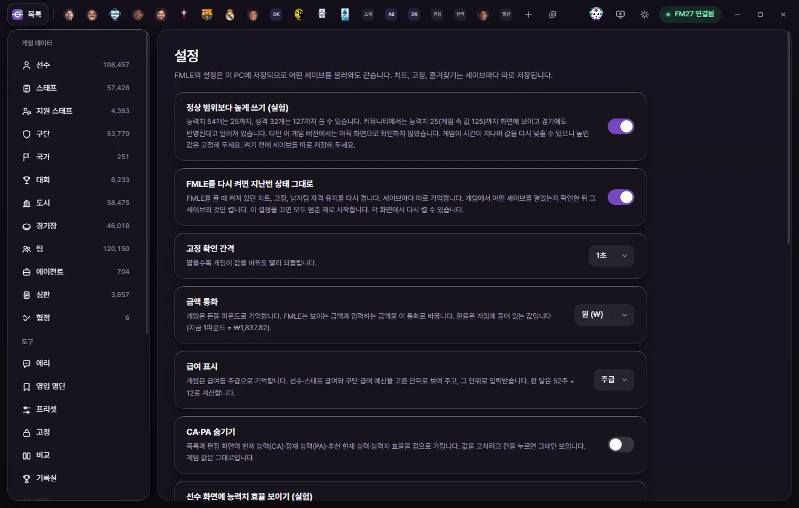
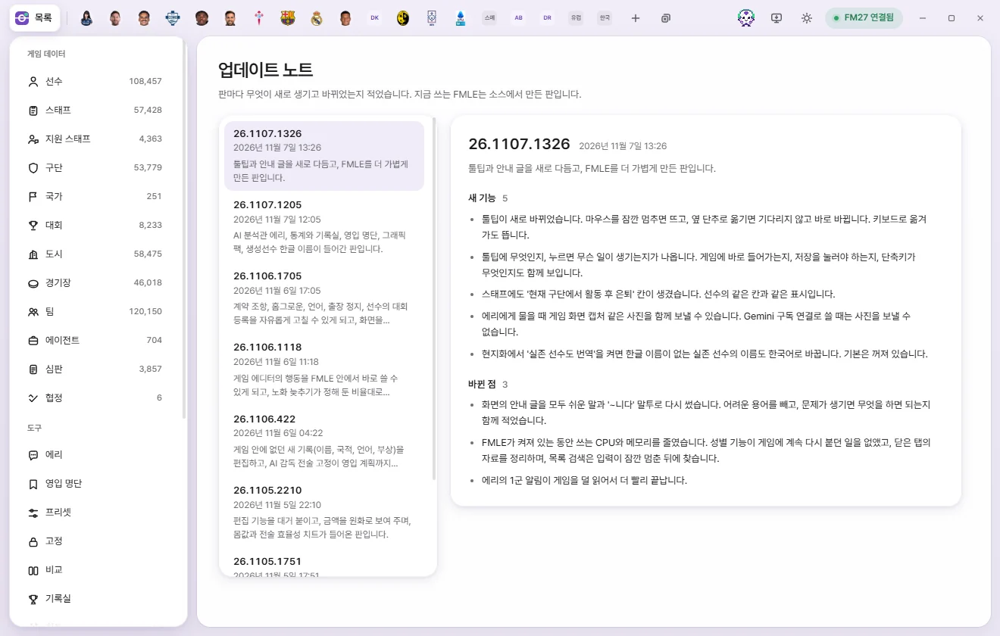

Tools
Settings and update notes
Explains what every option on the Settings screen changes, and how to browse version-by-version changes on the Update notes screen.
Settings screen
Click Settings under Tools in the left sidebar. Settings are stored on this PC, so they stay the same whichever save you load. Live tweaks, locks, and bookmarks are stored separately for each save (What's saved per save).
Settings apply and save the instant you change them—there is no Save button, and nothing here modifies values inside your game.


| Setting | Default | What it does |
|---|---|---|
| Allow values above normal limits (experimental) | Off | Lets you set certain values higher than the game's normal cap. Explained below |
| Restore previous state on startup | On | Turns back on the live tweaks, locks, and Keep men’s team eligibility that were active when you last closed FMAX. Explained below |
| Lock check interval | 1s | 0.5s, 1s, 2s, or 5s. Shorter intervals revert locked values faster whenever the game changes them (Locks) |
| Currency | Won | Won, Pounds, Euros, Dollars, or Yen. Displays and accepts money amounts in this currency |
| Wage display | Weekly wage | Weekly wage, monthly wage, or annual wage. Displays and accepts player/staff wages and club wage budgets in this unit |
| Hide CA & PA | Off | Masks Current Ability (CA), Potential Ability (PA), Recommended Current Ability, and Attribute effectiveness with dots in lists and edit tabs |
| Show attribute effectiveness on player tabs (experimental) | Off | Shows 'Current efficiency / Potential efficiency' next to CA, PA, and RCA at the top of player tabs |
| Glass effect | Off | Gives window bars and panels a frosted-glass translucency |
| Load lists automatically when connected to the game | On | When off, lists are read only when you open a list or click Reload |
| Save season-end records | On | Saves player records per save file. Explained below |
| Graphics packs | Folders for Facepack, logo, and kit packs. Explained in Graphics packs | |
| Reset settings | The Reset to defaults button. Explained below | |
| Current game version | The game version FMAX recognizes, along with how many types and fields it knows and can use |
Allow values above normal limits (experimental)
When turned on, certain fields such as attributes can be set higher than the game's usual cap (20 for attributes). The description underneath tells you which fields can go higher and how far (for example, 'n attributes up to 25').
- In the FM community, attributes up to 25 (125 internally) are known to display on screen and take effect in matches, though this hasn't been visually verified in this game version yet.
- Because the game may pull boosted values back down over time, use Locks on any values you raise.
- If no fields have been verified as safe for your current game version, the toggle cannot be turned on.
- Turning it off restores the normal limits, and any unsaved edits above the cap drop back to the standard maximum.
Restore previous state on startup
- When on, FMAX turns back on whichever live tweaks, locks, and Keep men’s team eligibility were active when you last closed the app. It checks which save is open in FM27 first and re-enables only what belongs to that save.
- When off, everything starts paused and you can turn items back on from their own screens.
- Auto-translation in Korean names (shown when FMAX is in Korean) and Match appearance overrides also follow this setting.
Compatibility mode
- Connects even when another mod—such as a skin showing hidden attributes, or a regen/retirement patch—has made minor edits to
game_plugin.dll. Off by default. - Connects only when the file layout matches original FM27 and only a small area was modified. It won't connect to a different game version or a heavily altered file.
- Reading, editing, and locking values all work normally. Only FMAX features that patch game code in the exact same spot as the other mod are turned off—those appear under Disabled features in the Connection status popover, and show Can’t turn on on their row in Live tweaks.
- When connected in compatibility mode, the status badge changes to FM27 connected · Compatibility.
- Keep men’s team eligibility cannot be used in compatibility mode.
Currency and wage display
- Internally, the game stores money in British pounds. FMAX uses the exchange rates built into the game and shows the current rate (such as '£1 = ₩…') in the description.
- Internally, the game stores wages as weekly wages. A month is calculated as 52 weeks ÷ 12.
- Both settings change only the unit shown on screen—values are still saved to the game in pounds and weekly wages.
Hide CA & PA
Masked fields become visible only while you click one to edit it. Game values aren't changed. Toggling it on shows a 'CA & PA hidden' notice.
Show attribute effectiveness on player tabs (experimental)
Indicates how close a player's attributes are to the best possible spread for their position on the same attribute budget. FMAX calculates this from RCA and one community team's FM27 attribute test findings. Regardless of this setting, you can always add the 'Attribute effectiveness', 'Current effectiveness', and 'Potential effectiveness' columns to lists and squad tables.
Glass effect
Off by default because scrolling rapidly through long lists can stutter with translucency enabled.
Save season-end records
Every time the game date advances by a week, FMAX snapshots all players who have featured this season, stored per save. Each snapshot saves their Ability score, the 6 summary card ratings, Report card, and Season stats (numbers per competition and positions actually played); when the season rolls over, the final snapshot from that season is kept.
- This is what lets the Stats screen show Last season Ability scores and keeps retired players in the Record room.
- FMAX only reads game values and writes a few MB per season into the FMAX data folder.
- Turning it off leaves existing records intact and stops saving new ones. Seasons played without FMAX running aren't recorded either.
Reset settings
Clicking Reset to defaults asks for confirmation, then resets every setting on this screen—along with your chosen columns, sort order, and active filters on each list—back to their initial state. Presets, Saved filters, locks, and bookmarks stay untouched, and no game values change.
Update notes screen
Click Update notes under Tools in the left sidebar to see what's new and changed in every version.


- Left list: Shows the version number, release date, and a one-line summary from newest to oldest. The build you're running is badged Current, and upcoming notes not yet released appear as 'Next version'.
- Right: Displays the chosen release's notes grouped into sections like 'New features' and 'Fixes'.
- Version numbers come from the build date and time—for example, 26.1107.1326 was built on November 7, 2026 at 13:26.
- At the top of the screen, you'll see 'Current version: …'.
For update alerts and installation details, see Install, update & uninstall.